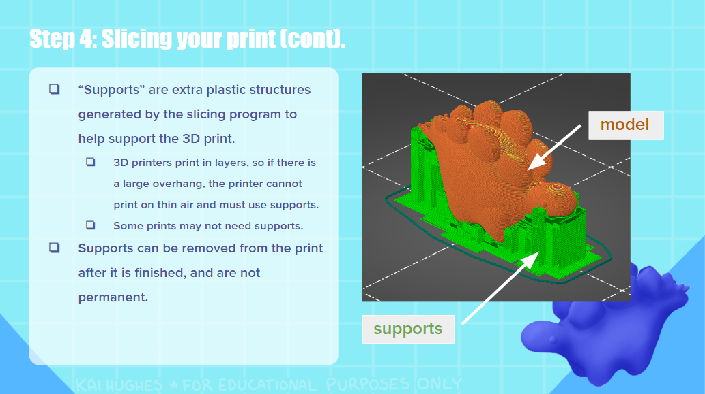

aug 2024 - sep 2024 <
This beginner friendly 3D printing guide was designed in Google Slides. The 3D model was created with Paint3D and Blender, and the background was drawn in FireAlpaca.


3D printing is a valueable skill, but many people feel intimidated while trying to learn it or get lost in the many different terms. I wanted to create a short, introductory guide to teach others the basics of 3D printing and make it more accessible. It starts off by telling others what options they have for 3D printing (printing something themselves vs outsourcing a 3D print with a service) and walks them through how to print something themselves. The guide explains the basic terms needed to slice and understand a 3D print.
The guide features a small dinosaur 3D model I made, and shows what it looks like when 3D printed with different filaments as well as painted with acrylic paint.
You can view and download the guide here.